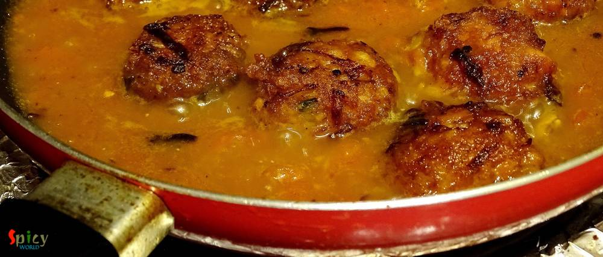

Simple and Easy Recipes
Fish ball Curry / Macher Kofta Curry
© 2016 Spicy World, Published on: Apr 4, 2016
Cooking fried kofta / balls in a rich gravy is an old school Bengali delicacy. I guess everybody loves to eat fried balls made with paneer, vegetables, chicken, fish, mutton etc, but after soaking them in a flavouful gravy they become scrumptious. I had some fish fillets in my fridge and couldn't find any better idea than this to use them. Process of making 'Kofta Curry' is tricky and little bit of time consuming, but trust me, the combo of those gravy soaked dumplings with some steamed rice is just heavenly.

Ingredients
- 2 medium size fish fillets (swai, vetki, tilapia, sea bass).
- 1 small boiled and grated potato.
- 3 Tablespoons of chopped onion.
- 1 Teaspoon of chopped green chilies.
- 2 Tablespoons of cornflour.
- 2 Teaspoons of garam masala.
- 2 tomatoes, chopped.
- Whole spices (3 green cardamom, 1 small cinnamon stick, 4 cloves, 1 bay leaf, half Teaspoon of cumin seeds).
- Salt and sugar.
- 1 Teaspoon of turmeric powder.
- 1 Teaspoon of red chilli powder.
- Half Teaspoon of roasted cumin powder.
- 1 Tablespoon of heavy cream / 3 Tablespoons of milk.
- Warm water.
- Half Teaspoon of Kasuri Methi / Dry fenugreek leaves.
- Some chopped coriander leaves.
- Half cup of oil.
- 1 Teaspoon of ginger paste.


Steps
Marinate the fish fillets with some salt and turmeric powder.
Heat 2 Tablespoons of oil and lightly fry the marinated fish fillets.
Now put boiled and grated potato, chopped onion, green chilies and salt in a mixing bowl.
Sprinkle a Teaspoon of garam masala and half Teaspoon of red chilli powder.
Lastly add the fried fish fillets. Mix everything very well.
Then make small and same sized balls out of the mixture.
Heat half cup of oil and deep fry the fish balls.
After frying keep them on a paper towel.
Now heat 2 Tablespoons of oil.
Add all the whole spices. Saute for few seconds.
Then add ginger paste, chopped tomato, 3 Teaspoons of sugar and some salt.
Cook everything in low flame for 15 minutes or until the oil separates.
Then add turmeric powder, remaining red chilli powder and roasted cumin powder. Mix well for 3 minutes.
Then add half cup of warm water, stir well and let it comes to boil.
Now add the fried fish balls into the gravy. Cook in slow flame for 2-3 minutes.
Lastly add heavy cream, kasuri methi and some coriander leaves. Give it a gentle mix and turn off the heat.
Let it rest for 2-3 minutes and then serve.
Your fish ball curry is ready ...
Serve this hot with some steamed rice ...
")